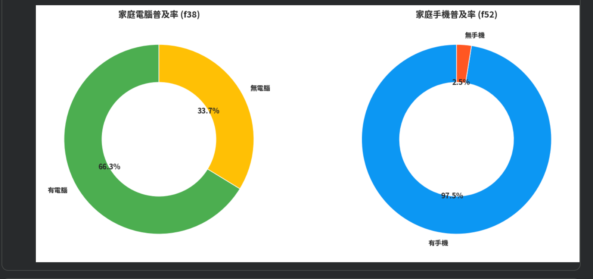
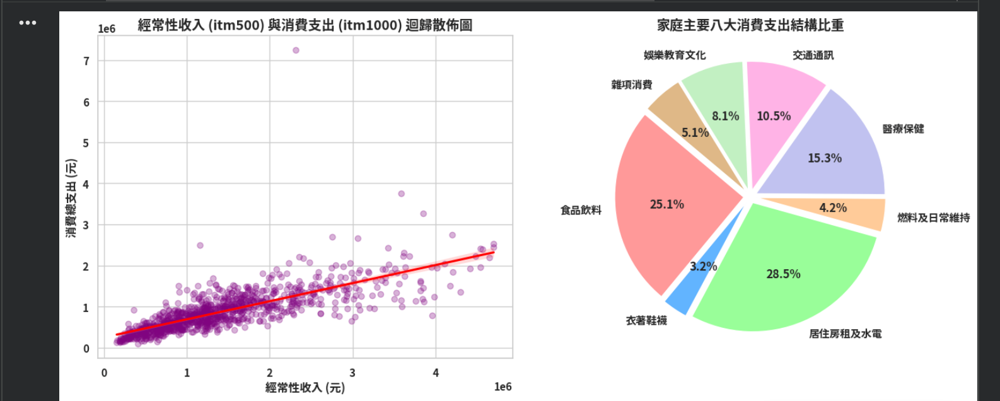
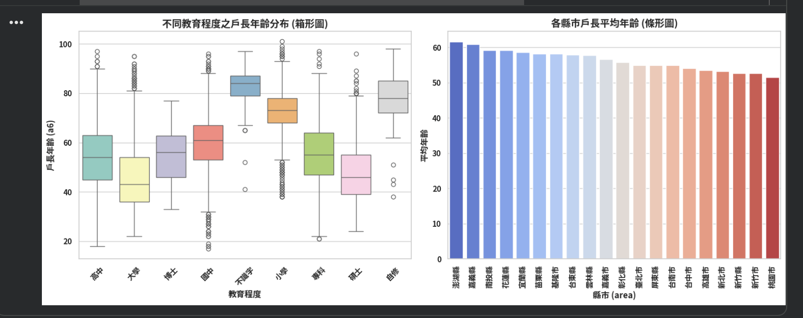

歡迎來到產業分析與統計實作成果儀表板
本網站整合了 112 年政府 A2 交通事故大數據分析、SRDA 居住狀態與家庭聚會關聯性研究，以及 SRDA 113 家庭收支調查的完整 Colab 統計分析與視覺化圖表。
112 年 A2 交通事故資料
合併 1 至 12 月共 90.6 萬筆資料，進行每月總量與每日平均紀錄數的敘述統計分析。
進入專區SRDA 資料分析
探討居住狀態與家庭聚會頻率之關聯，包含交叉分析、多維圖表與卡方獨立性檢定結果。
進入專區SRDA 113 家庭收支
展示 Google Colab 雲端實作之家庭收支結構、消安支出、教育與各縣市年齡分佈分析。
進入專區專案原始程式碼與雲端筆記本
提供完整的 R 語言實作腳本與 Google Colab 雲端線上程式碼，供您隨時下載與檢視。
一、112 年 A2 交通事故資料分析
分析 1 月至 12 月交通事故紀錄之總量波動與每日平均表現。
資料敘述統計
本研究使用 112 年度 A2 交通事故資料，將 1 月至 12 月共 12 個月份的 CSV 資料合併後進行分析。合併後資料共有 906,031 筆觀察值，並建立月份變數 month，用以比較各月份交通事故紀錄數的差異。
各月份事故紀錄數分別為：1 月 79,824 筆、2 月 70,525 筆、3 月 81,557 筆、4 月 70,868 筆、5 月 76,352 筆、6 月 75,242 筆、7 月 75,705 筆、8 月 73,719 筆、9 月 70,863 筆、10 月 73,742 筆、11 月 78,290 筆、12 月 79,344 筆。每月平均約為 75,502.58 筆，中位數為 75,473.5 筆，標準差約為 3,726.43 筆。其中，3 月的事故紀錄數最高，共 81,557 筆；2 月最低，共 70,525 筆。
由於各月份天數不同，因此進一步以各月事故紀錄數除以當月天數，計算每日平均事故紀錄數。結果顯示，3 月每日平均最高，約 2,630.87 筆；11 月次高，約 2,609.67 筆；9 月最低，約 2,362.10 筆，4 月則約為 2,362.27 筆。因此，即使控制不同月份的天數差異後，各月份之間仍存在一定程度的事故紀錄量差異。
圖 1｜2023 年 A2 交通事故各月紀錄數
此圖以長條圖呈現 1 月至 12 月的 A2 交通事故紀錄數。由圖中可以發現，各月份的事故紀錄數大致落在 7 萬至 8 萬筆之間，其中以 3 月 81,557 筆最高。
圖 2｜2023 年各月每日平均 A2 交通事故紀錄數
為排除不同月份天數所造成的影響，本圖將各月事故紀錄數除以當月天數。3 月每日平均最高（約 2,630.87 筆），11 月次高（約 2,609.67 筆），9 月最低。
二、SRDA 資料分析：居住狀態與家庭聚會頻率
探討獨居與同住者在家庭聚會參與頻率上的差異與獨立性檢定。
研究變數與敘述統計
本分析主要探討居住狀態與家庭聚會頻率之間是否具有關聯。居住狀態取自 g06a，依同住人數區分為「獨居」與「同住」；家庭聚會頻率取自 j01d，分為「從未」、「偶爾」及「經常」三類。排除遺漏值後，共有 132 個有效樣本。
實際交叉表
| 居住狀態 | 從未 | 偶爾 | 經常 | 合計 |
|---|---|---|---|---|
| 獨居 | 0 | 6 | 8 | 14 |
| 同住 | 11 | 43 | 64 | 118 |
| 合計 | 11 | 49 | 72 | 132 |
換算比例後，獨居者中約 57.14% 經常參加、42.86% 偶爾參加、0% 從未參加；同住者約有 54.24% 經常參加、36.44% 偶爾參加、9.32% 從未參加。
圖 1｜居住狀態與家庭聚會頻率分組長條圖
同住者總人數較多，兩組皆以「經常」參加家庭聚會者最多（同住 64 人、獨居 8 人）。
圖 2｜家庭聚會頻率圓餅圖
全樣本中，經常參加占 54.5%（72人）、偶爾占 37.1%（49人）、從未占 8.3%（11人）。
圖 3｜居住狀態與家庭聚會頻率折線圖
兩組百分比變化趨勢相近，皆以「經常」參與比例最高，整體結構差異不大。
圖 4｜居住狀態與家庭聚會頻率比例圖
以內部百分比呈現，排除樣本數差異後，結構相當一致。
三、SRDA 卡方檢定結果與最終結論
進行 Pearson 卡方獨立性檢定結果為：χ² = 1.4633，df = 2，p = 0.4811。由於 p 值大於 0.05，不拒絕虛無假設。
因「獨居 × 從未」的期望次數僅約 1.17（低於 5），為求穩健採 10,000 次 Monte Carlo 模擬，所得 p = 0.5463，仍未達顯著水準。
四、SRDA 113 家庭收支調查分析成果（Colab 實作專區）
展示 Google Colab 雲端筆記本中關於家庭收支、設備普及率、支出結構與戶長年齡之完整圖表與分析。
113 年度家庭收支與人口結構探索性分析摘要
本專區完整呈現您在 Colab 中針對 113 年度家庭收支調查所作的多維度統計。內容涵蓋現代家庭通訊設備普及率、經常性收入與消費支出之迴歸關係、八大消費支出結構比重、不同教育程度之戶長年齡分佈（箱形圖）以及各縣市戶長平均年齡（條形圖）。
圖 1｜家庭電腦與手機普及率 (f38, f52)

統計顯示家庭電腦普及率約達 66.3%，而手機普及率則高達 97.5%，反映出行動通訊裝置在國內家庭中的高度普及。
圖 2｜收入與消費迴歸散佈圖 & 八大支出結構

左圖呈現經常性收入與總消費支出之正相關迴歸趨勢；右圖圓餅圖顯示居住房租及水電（28.5%）與食品飲料（25.1%）占家庭支出之最大宗。
圖 3｜教育程度與戶長年齡分布（箱形圖）及各縣市平均年齡（條形圖）

箱形圖比較了不同教育程度戶長的年齡中位數與離散情形；右側條形圖則展示了各縣市戶長平均年齡的地域差異排名。
需要線上檢視完整的雲端 Colab 程式碼嗎？
您可以隨時點擊右側按鈕開啟 Google Colab 雲端筆記本進行程式碼與模型對照。